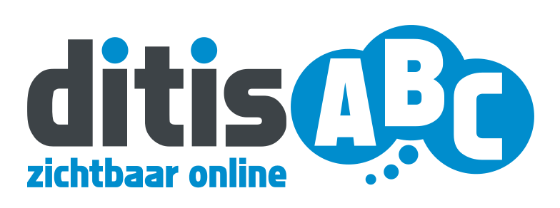
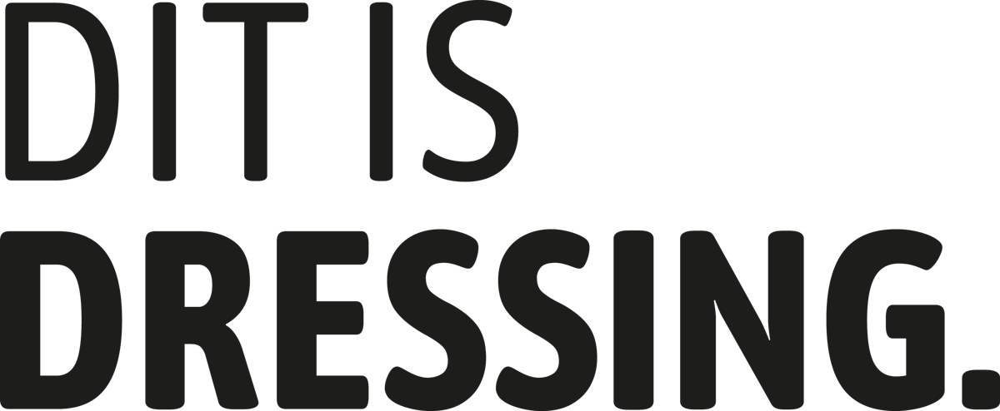
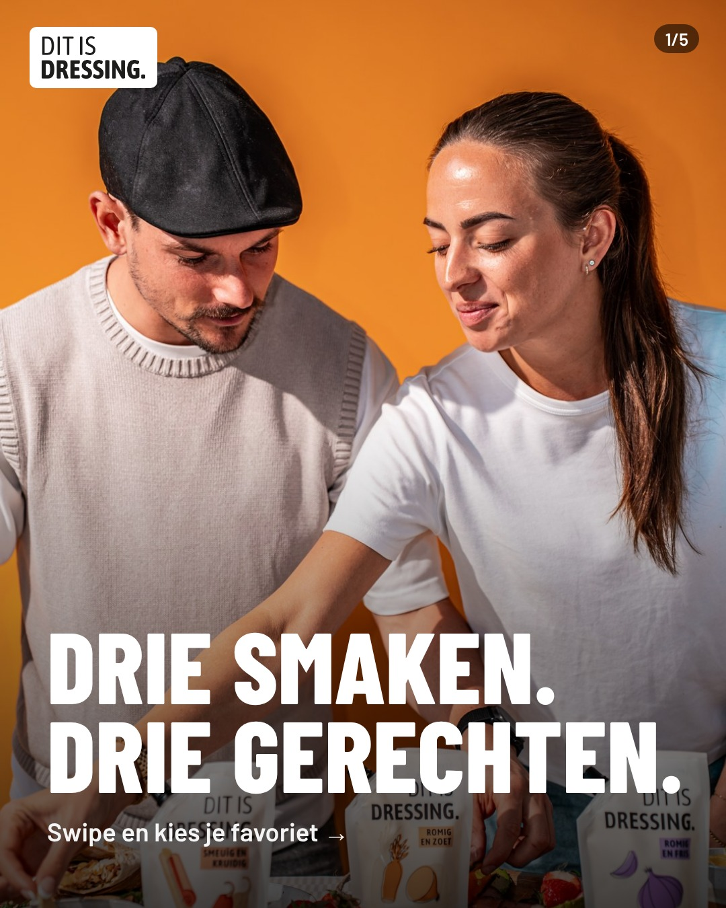
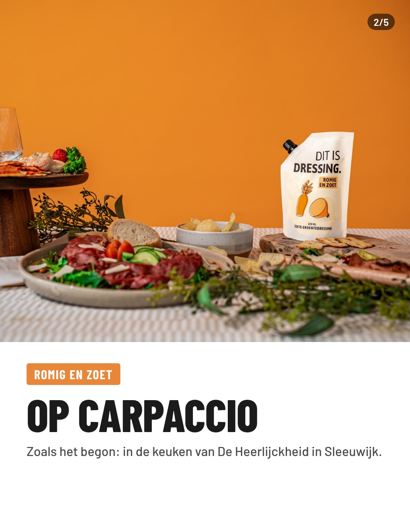
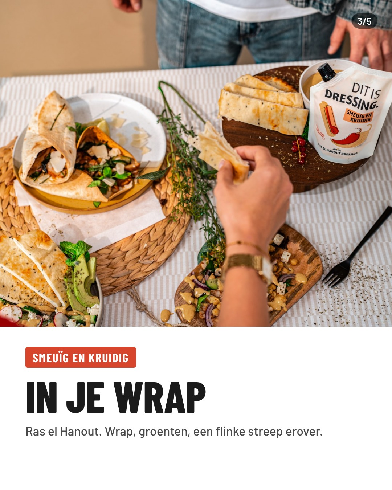
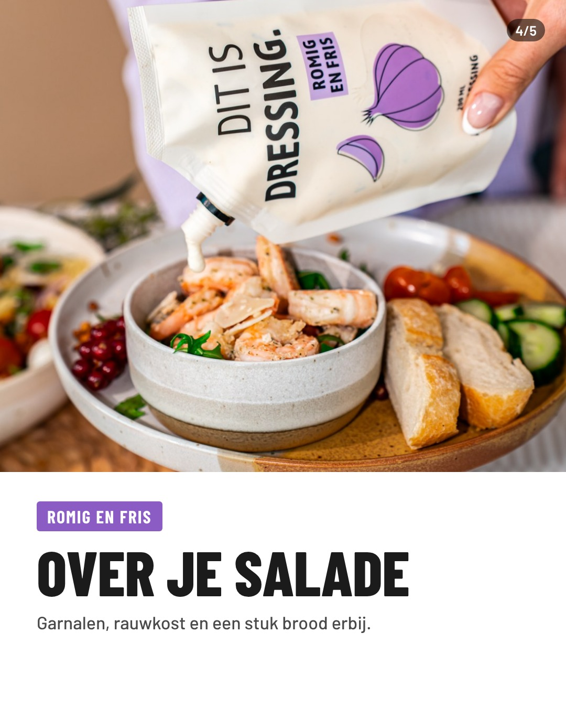
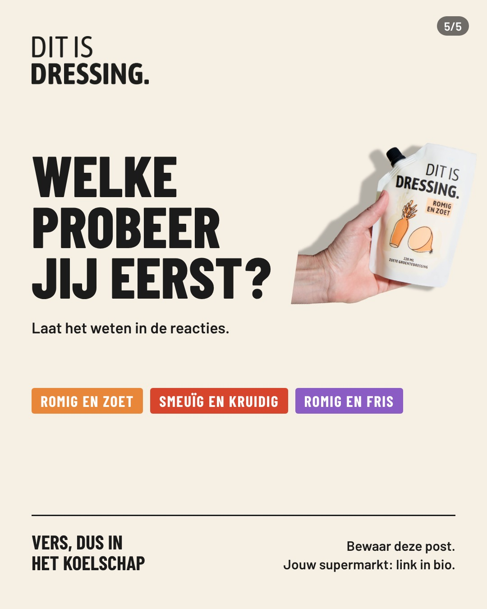

Persoonlijke pagina voor Martijn KnoopHoi Martijn, je vroeg om een kort en concreet idee. Dat staat in deze video van 2 minuten.

+Jullie doel en budget ken ik nog niet. Daarom laat ik richtingen zien en geen kant-en-klaar plan. Dat vullen we graag samen in.
Meer bereik rond jullie verkooppunten, zodat mensen de stazak herkennen als ze voor het schap staan.
Hier zou ik beginnenSocial als visitekaartje voor ondernemers en inkopers.
Via de webshop, met content en ads.
Twee voorbeelden, zoals ze op Instagram zouden staan.
Swipe door de vijf beelden.





Een carrousel wordt gemiddeld negen keer vaker bewaard dan een losse foto (Metricool, Instagram-onderzoek 2026).
Een vraag en een bewaar-oproep in de caption zorgen voor reacties en saves.
Zoekwoorden in de tekst (dressing, carpaccio, wrap, salade) in plaats van een rij hashtags.
15 seconden. Een reel levert ruim vier keer meer interactie op dan een losse foto, mits hij in de eerste seconden pakt.
Hét webbureau uit de Bollenstreek, sinds 2012 en drie keer op rij FD Gazelle. We werken het liefst samen voor de lange duur.
Willen jullie iets zelf doen? Dan leren we het jullie, en zijn we jullie backup. Ook voor de website.
Gebeurt er iets actueels? Eén appje en wij zetten het online.
Wij moeten gewoon presteren.
Bel of app me gerust. Dan kijken we samen welke richting bij jullie past.
Michel Goulmy, ditisABC · 023-3020409 · ditisabc.nl